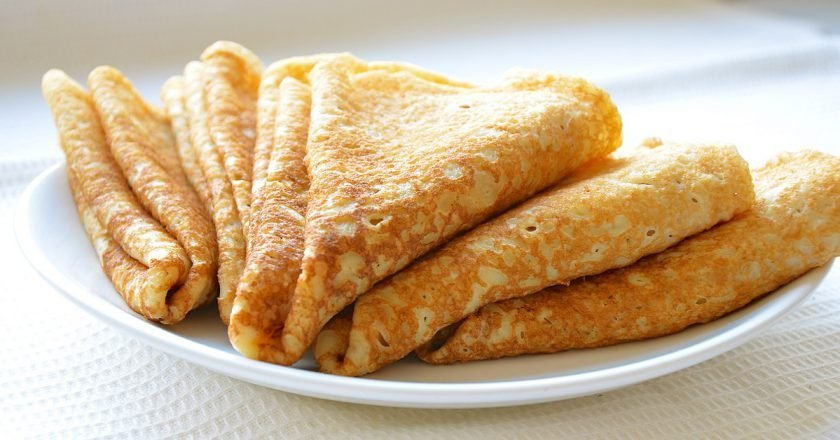

Блины
Любимое блюдо
Ингридиенты
Мука - 400 г
Две столовые ложки сахара
4 штуки куриных яиц
Молоко - 1 Литр
Две столовых ложки растительного масла
Как приготовить блины
Взбейте яйца с сахаром.
Постепенно введите муку и соль, чередуя с молоком и аккуратно размешайте до однородной массы.
Оставьте на 20 минут.
Добавьте в тесто растительное масло и жарьте блины на сильно разогретой сковороде.
Приятного аппетита!
Ссылка на рецепт
Copyright © Laossaar Eric